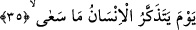
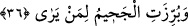
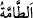
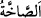

Nâziât sûresinde kıyamet “/et-tamme” kelimesi ile ifâde olunurken, bundan
sonraki Abese sûresi 33. âyette “/
es-sahha” kelimesi ile ifâde olunmaktadır. Bu
sebebsiz değildir. Çünkü bu âyetteki “tamme” kelimesinin kökü olan “tamm” bütün
yaratıkların yok edilmesi için sura birinci üfürüş anlamına alınırsa bu, Abese’de yer
alan ve vuku bulduğunda bütün insanların sâyesinde dirilecek olduğu o şiddetli ses
anlamında olan “es-sahha”dan önce meydana gelecektir. Bu şiddetli ses sâyesinde -
uyuyan insanın şiddetli bir ses duyduğunda uyanması gibi- bütün insanlar
dirileceklerdir. Dolayısıyla bu sûredeki “tamme” birinci üfürüş, Abese’deki “es-sahha”
ikinci üfürüş olduğundan önceki sûredeki önceki üfürüşe sonraki sûredeki de ikinci
üfürüşe delalet etmiş olacaktır.
Buna karşılık bu sûredeki “et-tamme” sura ikinci üfürülüş anlamına alınacak olursa o
zaman her iki yerdeki kullanım da yine güzel olmuş olacaktır. Çünkü “tamme”, daha
önce bu sûrenin yedinci âyetinde yer alan “onu ikinci üflemenin takip ettiği gün”
ifâdesinden sonra gelmiş olur ki tam yerinde kullanılmış olur. Abese’deki “sahha” ise
aynı sûrede Peygamberimiz (s.a.)’in İbn Ümmi Mektum’a seslenmemesi olayından
sonra olmuş olurki bu da aynı şekilde yerli yerince kullanılmış olur.
35. İnsanın yapıp ettiklerini hatırlayacağı gün
Bu cümle, gizli bir a’nî fiili ile mansubtur. Böylece yukarda bahsedilen “en büyük
belâ” hatırlatılmış olmaktadır. Âyetteki “ma” ma-i mevsûledir. Âyetteki “se’â” fiili
“yaptı, etti, işledi” anlamındadır. Bu açıklamaların ardından âyete şöyle mânâ
verilebilir: O gün kim olursa olsun bütün herkes, gerek iyilik gerek kötülük yapıp ettiği
herşeyi amel sahifesinde yazılmış olarak göreceği için hatırlar. Oysa o kişi daha önce
aşırı gafletinden ve aradan uzun zaman geçtiği için bunu unutmuştu. Buradaki anlam tıpkı
“Allah onları bir bir saymıştır onlar ise unutmuşlardır” (Mücâdele 58/6) âyet-i
kerimesindeki anlam gibidir.
36. Ve görene Cehennem açık bir şekilde gösterildiği zaman.
“Ve” kim olursa olsun “görene Cehennem açık bir şekilde gösterildiği zaman.” Bu
cümle, yukarda geçen “câet/geldi” fiilinin üzerine atfedilmiş bir cümledir. Buna göre
âyetin mânâsı; “adını işitmelerinin ardından Cehennem hiç kimseye kapalı olmayacak
bir biçimde apaçık ortaya çıkarıldığı zaman” demektir. Burada “Cehennem” kelimesiyle
kasdedilen, Cehennemin yedi tabakasından adı “Cehennem” olan özel tabaka değil,